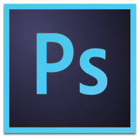
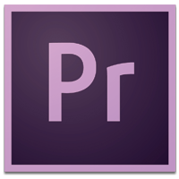

About
Glen Hodges
Web DeveloperI’m a front-end developer and designer with a wide skillset ranging from coding to animation to fine art. My education is in media and fine arts. I’m a self taught coder with a passion for learning new skills, software and practices. If you’re looking for someone who can jump between disclipines and has a keen eye for pixel perfect visuals, then I’m your guy!
Skills
Software
 Clients
Work and Experience
-
Web Developer - Jam Direct
I work on the ever challenging task of email coding. Old coding techniques mixed with new technologies proves challenging and interesting.
I also design, make gifs, work on web sites, create HTML 5 ads and so much more.2014 - Present
-
Carpenter
I worked with my hands for some years out of college. It’s still something I love but the pull of the web was too strong.
2008 - 2014
-
Degree in Media Arts - Sheridan College
I learned all things film with a focus on post production.
2004 - 2008